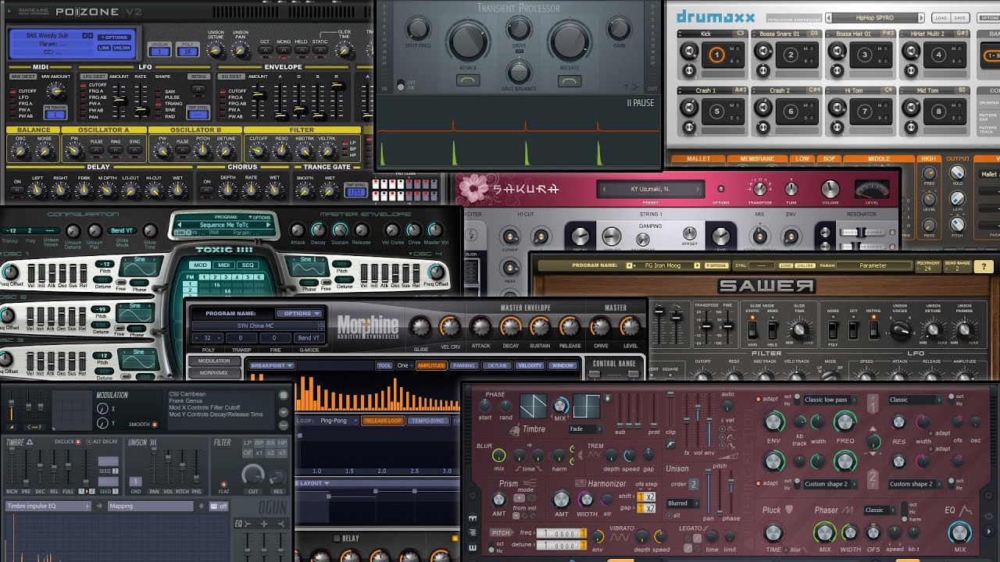
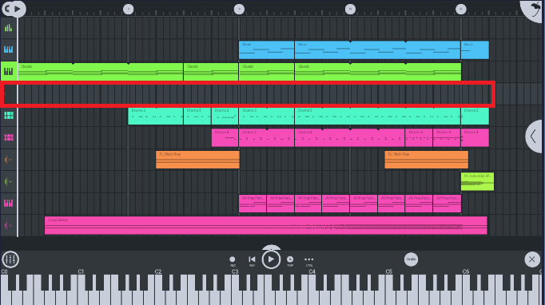
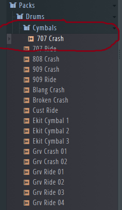
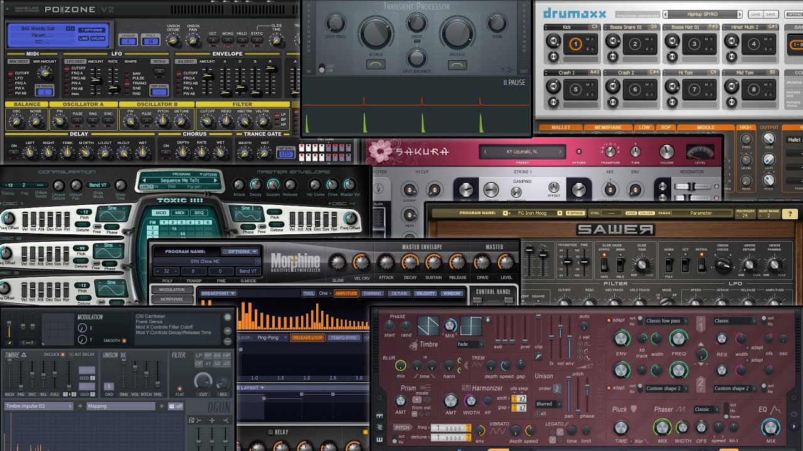
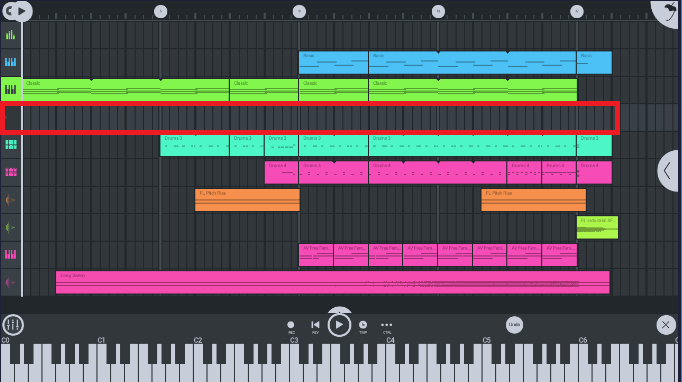
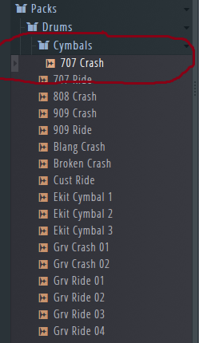

Fl STUDIO Productos

Plugins & VST
Dale mas elementos a tu produccion

Fl Studio Movil
¡Crea tu musica en cualquier momento!
:)

Productores FL
¡Tu podrias estar aqui algun dia!

Dale mas elementos a tu produccion

¡Crea tu musica en cualquier momento!
:)

¡Tu podrias estar aqui algun dia!